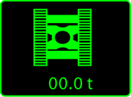
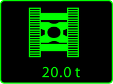

Ballastierungen wählen
Für alle Tasten der Bildschirmseite Grundgerät müssen Werte einer gültigen Traglasttabelle gewählt werden.
Das Wählen der Ballastierungen wird beispielhaft mit der Taste Zentralballast bei Auslegerkonfiguration 3 beschrieben.

Taste Bildschirmseite Rüstzustand am Bildschirm drücken. |
Bildschirmseite Rüstzustand wird am Bildschirm eingeblendet. |
Taste Bildschirmseite Grundgerät am Bildschirm drücken. |
Bildschirmseite Grundgerät wird am Bildschirm eingeblendet: |
Taste Zentralballast am Bildschirm drücken. |
Taste Zentralballast ändert den Status: |

Fig. 3314: Taste Zentralballast (leuchtet grün)
Fig. 3314: Taste Zentralballast (leuchtet grün)
Bildschirmausschnitt Spezifische Komponentenauswahl wird am Bildschirm eingeblendet: |
Zentralballast (beispielsweise 20 t (44,092 lb)) wählen: Taste Wert am Bildschirm drücken. |
Taste Wert ändert den Status: |
Taste Zentralballast ändert den Status: |

Fig. 3318: Taste Zentralballast (leuchtet grün)
Fig. 3318: Taste Zentralballast (leuchtet grün)
Zentralballast (beispielsweise 20 t (44,092 lb)) ist gewählt. |